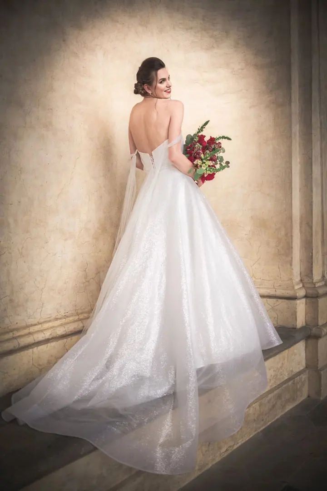
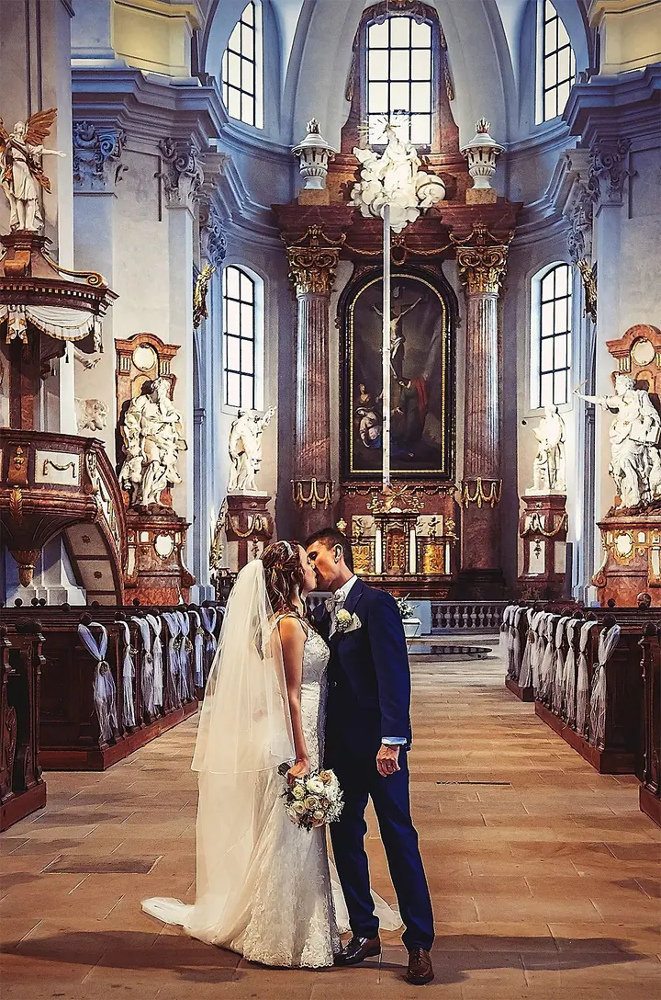
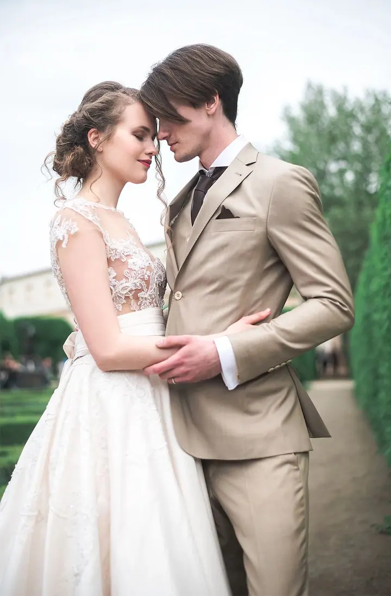
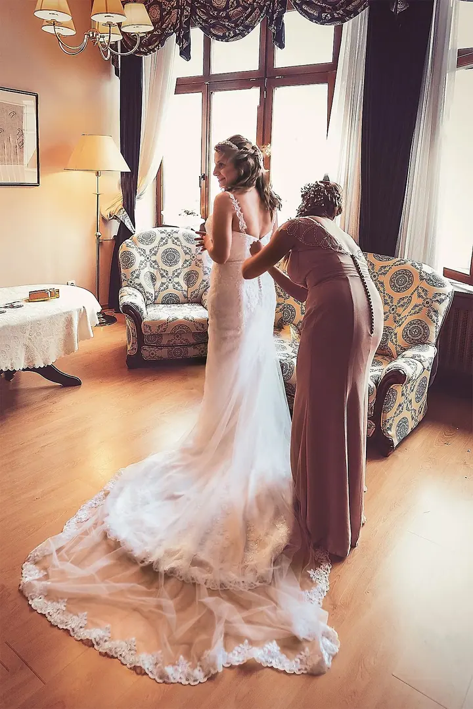
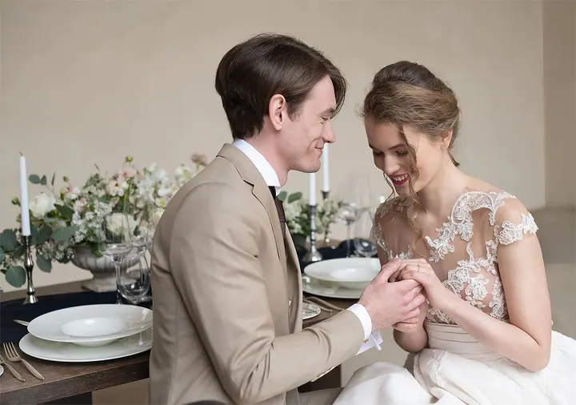

Svatby
Fotím od ranních příprav nevěsty i ženicha přes obřad, skupinky a portréty novomanželů až po večerní zábavu. Vybrat si můžete samotný obřad, půl dne nebo celý den.





Jmenuji se Roman Novotný a od roku 2014 fotím svatby a portréty po Čechách i Evropě. Nejradši vyprávím příběhy prostřednictvím fotek, od ranních příprav až po večerní zábavu.
Více o mně„Nejradši vyprávím příběhy prostřednictvím svých fotek a rád vzpomínám na chvíle kdy jsme ty příběhy společně tvořili.“
— Roman Novotný
Fotím od ranních příprav nevěsty i ženicha přes obřad, skupinky a portréty novomanželů až po večerní zábavu. Vybrat si můžete samotný obřad, půl dne nebo celý den.
Za ta léta jsem nafotil stovky portrétů. Při focení si rád pohraji se světlem i s nápady a k focení vám můžu domluvit líčení a kadeřnici.
Kromě svateb fotím také interiéry, exteriéry a architekturu. Ukázky najdete na mém druhém webu roman-foto.cz.
K focení mě to bůhví proč táhlo už od malička. Zaujatě jsem pozoroval svého dědu, který fotil a filmoval prakticky všechny rodinné události. Z nadšeného amatéra, který od dětství nutil pózovat první modely a modelky, jsem se v roce 2014 rozhodl vstoupit do fotografické branže jako profesionál.
Za tu dobu jsem měl tu čest nafotit stovky portrétů a desítky svateb. Svatby mi přirostly k srdci asi nejvíc. Být u vašeho šťastného dne od příprav až po večerní zábavu mě opravdu inspiruje a baví.
Rád jsem u toho, když se tajné sny a přání mění ve skutečnost. A v tom je kouzlo umělecké fotografie: přidat vašim fotografiím jedinečnou duši a atmosféru.
Napište mi nebo zavolejte termín a místo svatby. Domluvíme se, jaký balíček vám bude vyhovovat.
Před svatbou se potkáme a probereme, co, jak a kdy fotit, i vaše přání k místům na portréty.
Celý den jsem ve střehu, abych zachytil i momenty, které by se předem připravit nedaly. Když budete chtít, abych zůstal déle, není to problém.
Upravené fotografie dostanete do týdne po obřadu, v plném i redukovaném rozlišení.
Samotný obřad (max. 2 hodiny) stojí 7 900 Kč, půl dne 12 900 Kč a celý den (10 hodin) 15 900 Kč. Celý den je nejčastější volba.
Do týdne po obřadu. Podle balíčku je to zhruba 70–100, 200 nebo 300 fotografií v plném i redukovaném rozlišení.
Zůstanu, jak dlouho budete potřebovat. Každá další hodina stojí 1 000 Kč a balíček můžete navýšit i během svatby.
Ano, k ceně připočítávám dopravné z Pardubic na místo a zpět za 9 Kč/km. Fotím po celých Čechách i v Evropě.